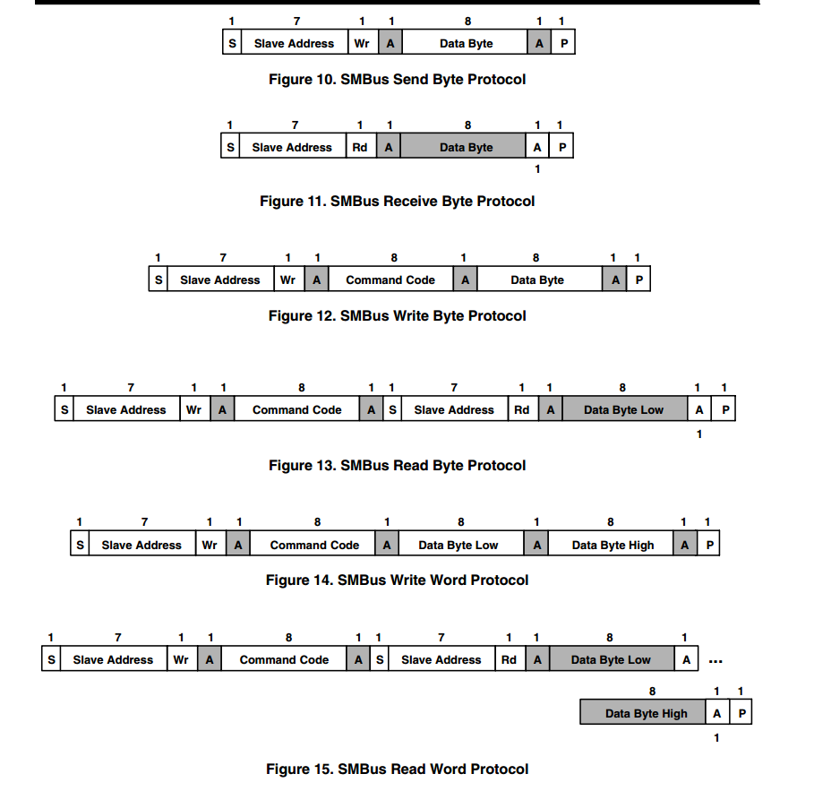
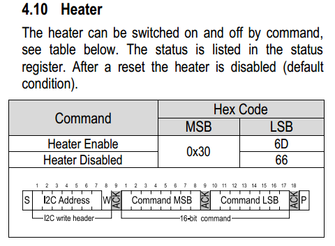
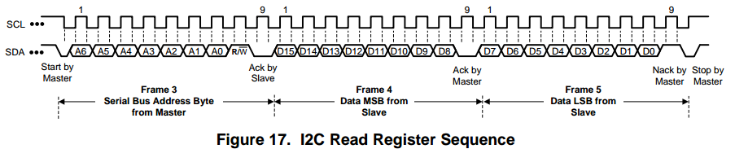

i2c之总结
问题
最近在linux下移植i2c的传感器驱动。移植了才发现各个设备的i2c读写都不太一样，对于这几个方式我做一个小总结。 首先我使用的是linux应用层通用的i2c读写，我的读写默认是使用smbus协议进行读写的。
smbus协议
先放一张图片合集，接下来就逐一看看这几种方式。
smbus Send Byte
这个方式比较少用到，一般我们的传感器都有地址位以及数据位，所以至少传输两位。但是我在使用SHT31这个传感器的就需要用到此方式。先看看SHT31寄存器的读写：

这里发现这个传感器没有寄存器地址，但是也要发两位数据，而且是高位先行。 所以这个时候就需要改写对应的读写函数如下：
直接按高低位写两位数据即可。当然这里我也存在一个疑问，直接调用write函数，对应的i2c输出应该是一个地址位，一个数据位，但是我两次调用write函数，应该会有四个byte信号输出，但是按照读写情况，还是十分正常的。
1 | DrvStatus_t SHT31_writeCommand(uint16_t cmd) { |
smbus Write Byte
这个应该是使用最多的的了。写一个数据到对应的寄存器中。这个就不赘述了。
smbus Write Word
对于smbus的读取和写入16位都应该算是上一操作的扩展，但是有时候也有不按常理出牌的地方。 因为标准的smbus协议读取16位数据是，都是默认先读到的为低8位，之后读取到的是高8位。 在使用smbus协议读取fdc2214传感器设备id就会出现问题。
fdc2214传感器读取协议：

可以发现他的读取是默认先高位，再低位。
所以我们在使用smbus协议读取到数据后要做好数据高低转换的措施：
1 | /* 读取16位 先读高8位再读低8位 */ |
i2c传输位顺序
值得一提的是i2c传输中的每一位都是高位先行的,也只有这样我们接收到msb的数据后直接8位交换位置即可。
比如设备id为 0x3055 其二进制为:0011 0000 0101 0101 发送顺序为:0011 0000 0101 0101
smbus接收到后为: 高八位 0011 0000 -> 低八位 0011 0000
低八位 0101 0101 -> 高八位 0101 0101
拼接==> 0101 0101 0011 0000 = 0x5530
交换==> 0x5530 = 0x3055